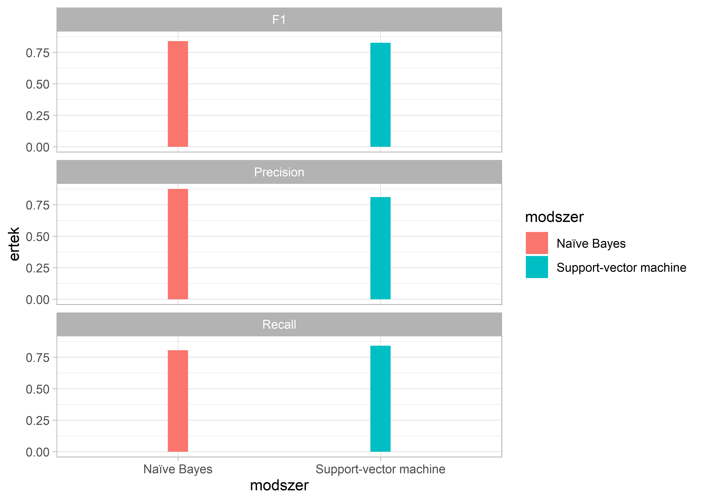

12 Osztályozás és felügyelt tanulás
12.1 Fogalmi alapok
A mesterséges intelligencia két fontos társadalomtudományi alkalmazási területe a felügyelet nélküli és a felügyelt tanulás. Míg az első esetben – ahogy azt a Felügyelet nélküli tanulás fejezetben bemutattuk – az emberi beavatkozás néhány kulcsparaméter megadására (így pl. a kívánt topikok számának meghatározására) szorítkozik, addig a felügyelt tanulás esetében a kutatónak nagyobb mozgástere van “tanítani” a gépet. Ennyiben a felügyelt tanulás alkalmasabb hipotézisek tesztelésére, mint az adatok rejtett mintázatait felfedező felügyelet nélküli tanulás.
A felügyelt tanulási feladat megoldása egy úgynevezett tanító halmaz (training set) meghatározásával kezdődik, melynek során a kutatók saját maguk végzik el kézzel azt a feladatot melyet a továbbiakban gépi közreműködéssel szeretnének nagyobb nagyságrendben, de egyben érvényesen (validity) és megbízhatóan (reliability) kivitelezni. Eredményeinket az ugyanúgy eredetileg kézzel lekódolt, de a modell-építés során félretett teszthalmazunkon (test set) értékelhetjük. Ennek során négy kategóriába rendezzük modellünk előrejelzéseit. Egy, a politikusi beszédeket a pozitív hangulatuk alapján osztályozó példát véve ezek a következők: azok a beszédek amelyeket a modell helyesen sorolt be pozitívba (valódi pozitív), vagy negatívba (valódi negatív), illetve azok, amelyek hibásan szerepelnek a pozitív (hamis-pozitív), vagy a negatív kategóriában (hamis-negatív). Mindezek együttesen egy ún. tévesztési táblát (confusion matrix) adnak, melynek további elemzésével ítéletet alkothatunk modellépítésünk eredményességéről.
A felügyelt tanulás számos kutatási feladat megoldására alkalmazhatjuk, melyek közül a leggyakoribbak a különböző osztályozási (classification) feladatok. Miközben ezek – így pl. a véleményelemzés – szótáralapú módszertannal is megoldhatóak (lásd a Szótárak és érzelemelemzés fejezetet), a felügyelt tanulás a nagyobb előkészítési igényt rendszerint jobb eredményekkel és rugalmasabb felhasználhatósággal hálálja meg (gondoljunk csak a szótárak domain-függőségére). A felügyelt tanulás egyben a mesterséges intelligencia kutatásának gyorsan fejlődő területe, mely az e fejezetben tárgyalt algoritmus-központú gépi tanuláson túl az ún. mélytanulás (deep learning) és a neurális hálók területén is zajlik egyre látványosabb sikerekkel.
Az egyes modellek pontosságának kiértékelésére általában az F értéket használjuk. Az F érték két másik mérőszám keresztezésével jön létre a precision és a recall, előbbi a helyes találatok száma az összes találat között. Az utóbbi pedig a megtalált helyes értékek aránya.
Ebből a két mérőszámból áll az F érték vagy F1, amely a két mérőszám harmonikus átlaga.
Jelen fejezetben két modell fajtát mutatunk be egyazon korpuszon az Support Vector Machine (SVM) és a Naïve Bayes (NB). Mindkettő a fentiekben leírt klasszifikációs feladatot végzi el, viszont eltérő módon működnek. Az SVM a tanító halmazunk dokumentumait vektorként reprezentálja, ami annyit jelent, hogy hozzájuk rendel egy számsort, amely egy közös térben betöltött pozíciójukat reprezentálja.
Ezt követően pedig a különféle képpen képpen felcímkézett dokumentumok között egy vonalat (hyperplane) húz meg, amely a lehető legnagyobb távolságra van minden egyes dokumentumtól.
Innentől kezdve pedig a modellnek nincs más dolga, mint a tanító halmazon kívül eső dokumentumok vektor értékeit is megállapítani, elhelyezni őket ebben a közös térben, és attól függően, hogy a hyperplane mely oldalára kerülnek besorolni őket. Ezzel szemben az NB a felcímkézett tanító halmazunk szavaihoz egy valószínűségi értéket rendel annak függvényében, hogy az adott szó adott kategóriába tartozó dokumentumokban hányszor jelenik meg, az adott kategória dokumentumainak teljes szószámához képest. Miután a teszt halmazunk dokumentumaiban minden szóhoz hozzárendeltük ezeket a valószínűségi értékeket nincs más dolgunk, mint a teszt halmazunkon kívül eső dokumentumokban felkeresni ugyanezen szavakat, a hozzájuk rendelt valószínűségi értékeket aggregálni és ez alapján minden dokumentumhoz tudunk rendelni több valószínűségi értéket is, amelyek megadják, hogy mekkora eséllyel tartozik a dokumentum a teszt halmazunk egyes kategóriáiba.
12.2 Osztályozás felügyelt tanulással
Az alábbi fejezetben a CAP magyar média gyűjteményéből a napilap címlapokat tartalmazó modult használjuk.57 Az induló adatbázis 71875 cikk szövegét és metaadatait (összesen öt változót: sorszám, fájlnév, a közpolitikai osztály kódja, szöveg, illetve a korpusz forrása – Magyar Nemzet vagy Népszabadság) tartalmazza. Az a célunk, hogy az egyes cikkekhez kézzel, jó minőségben (két, egymástól függetlenül dolgozó kódoló által) kiosztott és egyeztetett közpolitikai kódokat – ez a tanítóhalmaz – arra használjuk, hogy meghatározzuk egy kiválasztott cikkcsoport hasonló kódjait. Az osztályozási feladathoz a CAP közpolitikai kódrendszerét használjuk, mely 21 közpolitikai kategóriát határoz meg az oktatástól az egészségügyön át a honvédelemig. 58
Annak érdekében, hogy egyértelműen értékelhessük a gépi tanulás hatékonyságát, a kiválasztott cikkcsoport (azaz a teszthalmaz) esetében is ismerjük a kézi kódolás eredményét („éles“ kutatási helyzetben, ismeretlen kódok esetében ugyanakkor ezt gyakran szintén csak egy kisebb mintán tudjuk kézzel validálni). További fontos lépés, hogy az észszerű futási idő érdekében a gyakorlat során a teljes adatbázisból – és ezen belül is csak a Népszabadság részhalmazból – fogunk venni egy 4500 darabos mintát. Ezen a mintán pedigg a már korábban említett kétféle modellt fogjuk futtatni a NB-t és az SVM-t. Az ezekkel a módszerekkel létrehozott két modellünk hatékonyságát fogjuk összehasonlítani, valamint azt is megfogjuk nézni, hogy az eredmények megbízhatósága mennyiben közelíti meg a kézikódolási módszerre jellemző 80-90%-os pontosságot.
Először behívjuk a szükséges csomagokat. Majd a felügyelet nélküli tanulással foglalkozó fejezethez hasonlóan itt is alkalmazzuk a set.seed() funkciót, mivel anélkül nem egyeznének az eredményeink teljes mértékben egy a kódunk egy késöbbi újrafuttatása esetén.
library(stringr)
library(dplyr)
library(quanteda)
library(caret)
library(quanteda.textmodels)
library(HunMineR)
set.seed(1234)Ezt követően betöltjük a HunMineR-ből az adatainkat. Jelen esetben is vethetünk egy pillantást az objektum tartalmára a glimpse funkció segítségével, és láthatjuk, hogy az öt változónk a cikkek tényleges szövege, a sorok száma, a fájlok neve, az újság, ahol a cikk megjelent, valamint a cikk adott témába való besorolása, amely kézi kódolással került hozzárendelésre.
Data_NOL_MNO <- HunMineR::data_nol_mno_clean
glimpse(Data_NOL_MNO)
#> Rows: 71,875
#> Columns: 5
#> $ row_number <dbl> 1, 2, 3, 4, 5, 6, 7, 8, 9, 10, 11, 12, 13, 14, 1…
#> $ filename <chr> "nol_1990_01_02_01.txt", "nol_1990_01_02_02.txt"…
#> $ majortopic_code <dbl> 19, 19, 19, 1, 1, 19, 19, 1, 1, 19, 19, 1, 19, 1…
#> $ text <chr> "változás év választás év világ ünneplés köz kel…
#> $ corpus <chr> "NOL", "NOL", "NOL", "NOL", "NOL", "NOL", "NOL",…Majd pár kissebb átalakítást hajtunk végre az adatainkon. Először is ehhez a modellhez most csak a Népszabadság cikkeket fogjuk alkalmazni a Magyar Nemzet cikkeit kiszedjük az adataink közül. Ezután leegyszerűsítjük a kódolást. Összesen 21 témakört lefed a cikkek kézi kódolása most viszont ezekből egy bináris változót készítünk, amelynek 1 lesz az értéke, ha a cikk makrogazdaságról szól, ha pedig bármilyne más témakörről, akkor 0 lesz az értéke. A két fajta cikkből összesen 10000 db-os mintat veszunk, amelyben a két típus egyenlő arányban van jelen. A modellek pedig az ide történő besorolálst próbálják majd megállapítani a cikkek szövege alapján vagyis, hogy makrogazdasági témáról szól-e az adott cikk, vagy valamilyen más témáról. Majd kiválasztjuk a táblából a két változó, amelyekre szükségünk lesz a cikkek szövegét text és a cikkekhez kézzel hozzárendelt téműt label a többit pedig elvetjük.
Data_NOL <- Data_NOL_MNO %>%
subset(corpus == "NOL" & is.na(text) == F) %>%
mutate(label = if_else(majortopic_code == 1, 1, 0)) %>%
group_by(label) %>%
sample_n(5000) %>%
ungroup() %>%
select(text, label)Ezt követően egy korpusszá alakítjuk az objektumunkat.
Majd létrehozunk egy új objektumot id_train néven amely 1 és 4500 között 3600 különböző a sample() funkció segítségével véletlenszerűen kiválogatott számot tartalmaz. Utána pedig a korpuszunkhoz hozzá adunk egy új id_numeric elnevezésű változót, amely csupán a megszámozza az egyes cikkeket. Ezeket a késöbbiekben arra fogjuk felhasználni, hogy kialakítsuk a tanító és teszt halmazokat
Ezt követően a korpuszunkat egy tokenekké alakítjuk és ezzel egyidejűleg eltávolítjuk a HunMiner beépített magyar stopszó szótárát, valamint szótövesítést is végrehajtunk.
stopszavak <- HunMineR::data_stopwords_extra
nol_toks <- tokens(nol_corpus, remove_punct = TRUE, remove_number = TRUE) %>%
tokens_remove(pattern = stopszavak) %>%
tokens_wordstem()A tokeneket pedig egy dfm-é alakítjuk.
Ezt követően kialakítjunk a tanító és teszt halmazokat a korábban létrehozott változók segítségével. A lenti kód elsősora egy subsetet alakít ki az adattáblánk mindazon soraiból, amelyek id_numeric változója szerepel az id_train számsorban ez lesz a tanító alhalmaz. Majd ennek megfelelően egy másik alhalmazt alakítunk ki a teszteléshez, amely minden olyan sorát fogja tartalmazni adattáblánknak, amely id_numeric változója nem szerepel az id_train számsorban.
train_dfm <- dfm_subset(nol_dfm, id_numeric %in% id_train)
test_dfm <- dfm_subset(nol_dfm, !id_numeric %in% id_train)Azáltal pedig, hogy kialakítottuk a két alhalmazt el is végeztük az utolsó előkészítési folyamatot is, az így előkészített adatokon tudjuk majd futtatni a következőkben, mind az NB és az SVM modellünket.
12.2.1 Naïve Bayes
A fejezet Naïve Bayesre vonatkozó kódjai quanteda tutoriál menetét és kódjait követik.59 Először létrehozzuk a modellünket, amely számára meghatározzuk, hogy a label változóhoz kell egy predikciót adnia, majd ezt alakalmazzuk az adatainkra. A dfm_match parancs segítségével eltávolítjuk a vizsgált dokumentumaink szavai közül mindazokat, amelyek nem szerepeltek a teszt halmazunkba. Erre azért van szükség, mivel az NB csak azokat a szavakat képes kezelni, amelyekhez már hozzárendelt egy valószínűségi értéket, tehát csak azokat, amelyek a teszt halmazban is megtalálhatóak.
nol_nb <- textmodel_nb(train_dfm, train_dfm$label)
dfm_kozos <- dfm_match(test_dfm, features = featnames(train_dfm))A következő objektumban eltároljuk a kézikódolás eredményeit, amelyeket már ismerünk.
Majd eltároljuk egy másik objektumban azokat az eredményeket, amelyeket a modellünk generált.
A két fenti adat segítségével pedig létrehozhatjuk a korábban is említett tévesztési táblát.
eredmeny_tabla <- table(tenyleges_osztaly, becsult_osztaly)
eredmeny_tabla
#> becsult_osztaly
#> tenyleges_osztaly 0 1
#> 0 3310 463
#> 1 794 2933Ezt létrehozhatjuk a caret csomag funkciójával is, amely a tévesztési tábla mellett sok más hasznos adatot is megad a számunkra.
confusionMatrix(eredmeny_tabla, mode = "everything")
#> Confusion Matrix and Statistics
#>
#> becsult_osztaly
#> tenyleges_osztaly 0 1
#> 0 3310 463
#> 1 794 2933
#>
#> Accuracy : 0.832
#> 95% CI : (0.824, 0.841)
#> No Information Rate : 0.547
#> P-Value [Acc > NIR] : <2e-16
#>
#> Kappa : 0.665
#>
#> Mcnemar's Test P-Value : <2e-16
#>
#> Sensitivity : 0.807
#> Specificity : 0.864
#> Pos Pred Value : 0.877
#> Neg Pred Value : 0.787
#> Precision : 0.877
#> Recall : 0.807
#> F1 : 0.840
#> Prevalence : 0.547
#> Detection Rate : 0.441
#> Detection Prevalence : 0.503
#> Balanced Accuracy : 0.835
#>
#> 'Positive' Class : 0
#> Az eredményeken pedig láthatjuk, hogy még az egyszerűség kedvéért lecsökkentett méretű tanítási halmaz ellenére is egy kifejezett magas 83.25%-os pontossági értéket kapunk, amely többé-kevésbé megfeletethető egy kizárólag kézikódolással végzett vizsgálat pontosságának. Ezt követően a kapott eredményeket a mérésünk minőségéről egy táblázatba rendezzük, későbbi összehasonlítás céljából.
12.2.2 Support-vector machine
A következő kódsorral alkalmazzuk az SVM modellünket, hogy az adatainkon belül a label változóra vonatkozóan készítsen predikciót.
Ismét eltároljuk a kézikódolás eredményeit, amelyeket már ismerünk. Valamint az eredményeket, amelyeket az SVM modellünk generált szintén eltároljuk egy objektumba.
tenyleges_osztaly_svm <- dfm_kozos$label
becsult_osztaly_svm <- predict(nol_svm, newdata = dfm_kozos)Ismét létrehozhatunk egy egyszerű tévesztési táblát.
eredmeny_tabla_svm <- table(tenyleges_osztaly_svm, becsult_osztaly_svm)
eredmeny_tabla_svm
#> becsult_osztaly_svm
#> tenyleges_osztaly_svm 0 1
#> 0 3061 712
#> 1 578 3149Valamint jelen esetben is használhatjuk a caret csomagban található funkciót, hogy még több információt nyerjünk ki a modellünk működéséről.
confusionMatrix(eredmeny_tabla_svm, mode = "everything")
#> Confusion Matrix and Statistics
#>
#> becsult_osztaly_svm
#> tenyleges_osztaly_svm 0 1
#> 0 3061 712
#> 1 578 3149
#>
#> Accuracy : 0.828
#> 95% CI : (0.819, 0.836)
#> No Information Rate : 0.515
#> P-Value [Acc > NIR] : < 2e-16
#>
#> Kappa : 0.656
#>
#> Mcnemar's Test P-Value : 0.000213
#>
#> Sensitivity : 0.841
#> Specificity : 0.816
#> Pos Pred Value : 0.811
#> Neg Pred Value : 0.845
#> Precision : 0.811
#> Recall : 0.841
#> F1 : 0.826
#> Prevalence : 0.485
#> Detection Rate : 0.408
#> Detection Prevalence : 0.503
#> Balanced Accuracy : 0.828
#>
#> 'Positive' Class : 0
#> Itt ismét azt találjuk, hogy a csökkentett méretű korpusz ellenére is egy kifejezetten magas pontossági értéket 82.83%-ot kapunk. Az eredményeinket ismét egy adattáblába rendezzük, amelyet végül összekötünk az első táblánnkkal, hogy a két módszert a korábban tárgyalt három mérőszám alapján is összehasonlítsuk.
svm_eredmenyek <- data.frame(confusionMatrix(eredmeny_tabla_svm, mode = "prec_recall")[4])
svm_eredmenyek$meres <- row.names(svm_eredmenyek)
svm_eredmenyek$modszer <- "Support-vector machine"
row.names(svm_eredmenyek) <- 1:nrow(svm_eredmenyek)
eredmenyek <- rbind(svm_eredmenyek, nb_eredmenyek) %>%
subset(meres %in% c("Precision", "Recall", "F1"))
names(eredmenyek)[1] <- "ertek"Végül egy ábrával szemléltetjük a kapott eredményeinket, amelyen látható, hogy jelen esetben a két módszer közötti különbség minimális. Jelen esetben a Naïve Bayes jobban teljesített, mint a Support-vector machine az F1 és Precision tekintetében, viszont utóbbi a Recall tekintetében.
ggplot(eredmenyek, aes(x = modszer, y = ertek, fill = modszer)) +
geom_bar(stat = "identity", width = 0.1) +
facet_wrap(~meres, ncol=1)
A korpusz regisztációt követően elérhető az alábbi linken: https://cap.tk.hu/a-media-es-a-kozvelemeny-napirendje↩︎
A kódkönyv regisztrációt követően elérhető az alábbi linken: https://cap.tk.hu/kozpolitikai-cap↩︎